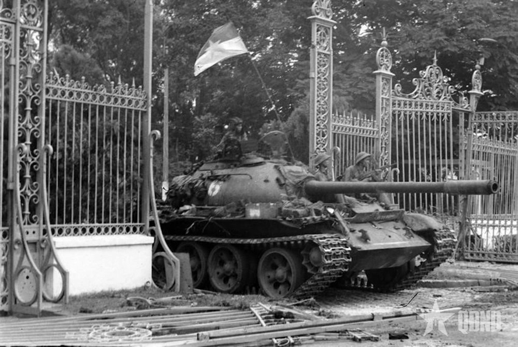

VIỆT NAM
THỜI BÁO
TOÀN VẸN NON SÔNG
BẮC NAM MỘT NHÀ
Từ Điện Biên Phủ trên không đến lá cờ chiến thắng tung bay trên nóc Dinh Độc Lập ngày 30/4/1975
ĐÁNH BẠI "VIỆT NAM HÓA CHIẾN TRANH" VÀ ĐIỆN BIÊN PHỦ TRÊN KHÔNG
Giai đoạn 1969–1973, Mỹ áp dụng chiến lược "Việt Nam hóa chiến tranh", dùng người Việt đánh người Việt và mở rộng chiến tranh sang Campuchia và Nam Lào. Tuy nhiên, dưới sự lãnh đạo sáng suốt của Đảng, quân và dân ta đã liên tiếp đánh bại các cuộc phiêu lưu quân sự của địch.
Đầu năm 1971, quân giải phóng phối hợp với quân dân Lào mở , giáng đòn nặng nề vào lực lượng tổng dự bị ngụy.
Chiến dịch diễn ra trong , đập tan cuộc tiến công "Lam Sơn 719" của Mỹ - ngụy, đánh dấu sự phá sản của chiến lược Việt Nam hóa chiến tranh về mặt quân sự.
Trong 12 ngày đêm cuối , đế quốc Mỹ huy động hàng trăm máy bay B-52 rải thảm Hà Nội, Hải Phòng nhằm "đưa miền Bắc trở về thời kỳ đồ đá". Nhưng quân dân ta đã chiến đấu anh dũng, bắn rơi 81 máy bay (trong đó có 34 siêu pháo hạm B-52), làm nên trận "Hà Nội - Điện Biên Phủ trên không" chấn động thế giới.
Thắng lợi đó buộc Mỹ phải ký về chấm dứt chiến tranh, lập lại hòa bình ở Việt Nam vào ngày , rút toàn bộ quân Mỹ về nước ("Đánh cho Mỹ cút").

XE TĂNG TIẾN VÀO DINH ĐỘC LẬP • 30–04–1975ĐẠI THẮNG MÙA XUÂN 1975: ĐÁNH CHO NGỤY NHÀO
Sau khi Mỹ rút quân, Bộ Chính trị đề ra kế hoạch chiến lược giải phóng miền Nam trong hai năm 1975–1976, nhưng nếu thời cơ đến sẽ giải phóng ngay trong năm 1975.
Cuộc Tổng tiến công bắt đầu bằng Chiến dịch Tây Bắc (mở màn bằng trận then chốt Buôn Ma Thuột 10/3/1975), tiếp đó là Chiến dịch giải phóng Huế - Đà Nẵng, đập tan các quân đoàn chủ lực địch.
Bộ Chính trị quyết định mở chiến dịch giải phóng Sài Gòn mang tên Chiến dịch Hồ Chí Minh, bắt đầu từ ngày với 5 cánh quân thần tốc dũng mãnh tiến vào nội đô.
Đúng 11 giờ 30 phút ngày , xe tăng ta húc văng cổng Dinh Độc Lập, cờ cách mạng tung bay trên nóc Dinh. Tổng thống Dương Văn Minh tuyên bố đầu hàng không điều kiện. Chiến dịch Hồ Chí Minh toàn thắng!
Đại thắng Mùa Xuân 1975 đã kết thúc vẻ vang 21 năm kháng chiến chống Mỹ cứu quốc, thu giang sơn về một mối, mở ra kỷ nguyên độc lập, tự do và chủ nghĩa xã hội trên toàn quốc.
CÁC CÁNH QUÂN THẦN TỐC
• MỆNH LỆNH THẦN TỐC: "Thần tốc, thần tốc hơn nữa; táo bạo, táo bạo hơn nữa; tranh thủ từng giờ từng phút xốc tới mặt trận!" (Đại tướng Võ Nguyên Giáp).
• KHU VỰC GIẢI PHÓNG: Toàn bộ dải đất miền Nam cùng quần đảo Trường Sa được giải phóng hoàn toàn.
KIỂM CHỨNG